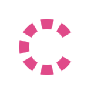
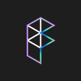

01
Violet + rose
Variables Generator
Create Figma variables via JSON
48.2k2.1k
Ten compact versions of the same pattern: project icons align with the title, cards fit their content, and unlabeled metrics sit below the description. Figma plugins use likes; VS Code themes use ratings.
Variables Generator
Create Figma variables via JSON
Chroma Colors
Create bulk color styles in Figma

Colorizer
Sort colors by hue values in Figma
Regulator
Bulk rename color styles in Figma
Navigator
Find color styles in Figma
Kaleidocode
Generate VS Code themes in Figma
Symbols
A simple file icon theme for VS Code

Fluent Icons
A product icon theme for VS Code
Min
A minimal theme for VS Code
Colorizer
Sort colors by hue values in Figma
Variables Generator
Create Figma variables via JSON